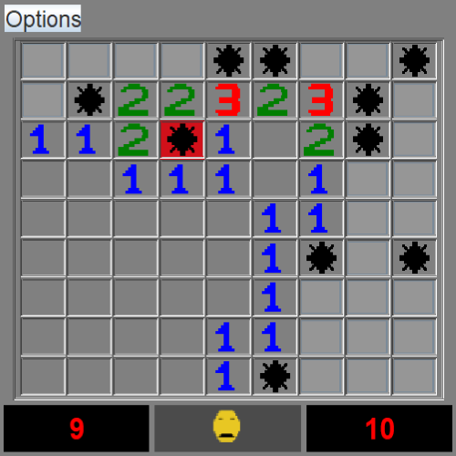

Minesweeper is a game where you have a table with clickable squares, and
under this squares there may be mines. Your goal is to click every square
except those with mines.
Download here: https://github.com/Luca-Alin/MinesweeperGame
After clicking the first square, numbers will appear on the screen. Each number is equal to the number of mines around it. It you think there is a mine under a certain square, you can click the right mouse button to place a flag (a square covered by a flag cannot be clicked accidentaly). Note that the lower left counter is equal to the number of mines, and will help you know how many flags you have to place.
Once you click every square except the ones with mines, you'll win the game. Press the button with asmiley face to restart, or the "Options" button to play with more squares and mines.
Be careful! Clicking a square means you lose the game. Try again by pressing button with the sad face.
Install instructions
1. Go to the following link: https://github.com/Luca-Alin/MinesweeperGame
2. Click the "Code" button, then download as ZIP
3. Unzip the downloaded file, and click "MinesweeperGame.jar"
Install instructions
1. Click the following link: https://github.com/Luca-Alin/MinesweeperGame
2. Click the "Code" button, then click "Download ZIP"
3. Unzip the downloaded file, and click "MinesweeperGame.jar"
Requirements:
- Java Development Kit